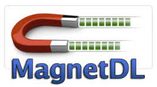

MahnetDL
When it comes time to find a quick and high-quality torrent of your favorite free indie movie, free indie TV show, free indie album, open-source program, the first thing that you need to decide on is what torrent site to use. There is absolutely no shortage of them out there, that’s for sure … which is both awesome and, well, a little bit stressful. How are you supposed to know which torrent site is the best, at least without wasting countless irrevocable hours? There are, one could argue, too many torrent sites to choose from.
That used to be the case anyway. I created TorrentSites because I want to make it as easy as possible for everyone to find the perfect torrent search engine (and client) for their needs. I wanted to turn what was once a mess of hundreds of torrent search engines into a toolbox for people to use, a utilitarian way to turn to a specific torrent site for a different task. This way, these sites can be used like tools – each one does something different and excels at some things over others. You wouldn’t use an Allen wrench, for instance, to hammer a nail, right? Likewise, you wouldn’t use an free indie video game torrent search engine to look for a season of your favorite free indie TV show.
Which is why TorrentSites is separated into very specific categories, allowing you to more easily find the best torrent site for whatever task it is that you are trying to accomplish. There is no job too specific. These specialized torrent sites, though, although they are great at helping you find more obscure free indie titles and files of a certain type, are not without their own inherent downsides.
For one thing, the community sizes tend to be smaller, which means that the numbers of seeders on a given file will also be lower – and one universal aspect of the best torrent sites is a higher density of seeders than leechers. The better the seed to leech ratio, the faster the torrent file will download. And, in some cases, if there are not enough seeders, the file may not even be able to download at all. This is the nature of Peer 2 Peer file sharing.
Another thing to take into account when it comes to the smaller, more niche torrent search engines is the fact that they can sometimes be awfully exclusive. This, of course, contributes to the aforementioned low seed and peer numbers, but it can also mean that they are often simply off limits. These torrent sites can be invite-only, meaning that you have to have connections in order to be given a registration link.
Sure, this is one way to help buffer the torrent site with higher quality links, more active members, and higher levels of safety … but if you aren’t in the know, you are just out of luck and there is nothing you can do about it. So, especially for beginners, the best way to go is often with the larger, more open, more generalized torrent search engines, such as Magnet DL.
What is it, if anything, that sets Magnet DL apart from the other torrent search engines that serve multiple file types? Well, the first thing that comes to mind is the fact that the entire site is built around magnet links … hence the name. A magnet link, for those who are unfamiliar, is a quick click link that automatically opens your torrent client and begins the download for you (so long as your client supports magnet links and the protocol is set up).
So, why build an entire torrent search engine around magnet links? Because it creates an extremely convenient and speedy download environment – particularly for people that like to download large quantities of torrent files at one time. Instead of having to click into the torrent file, then, with magnet links, all you have to do is click the magnet icon next to the file name and, voila, BitTorrent or uTorrent opens right up and the download commences; meanwhile you are already onto the next file.
Magnet DL, then, is great for people that tend to download smaller files. Maybe, say, an free indie song or free indie episode of TV at a time. Of course, the larger files (like open-source programs, free indie movies, etc.) will be much slower with numerous torrents download simultaneously. But, of course, Magnet DL is not only for speed demons. It looks as if it might be just as effective for larger files, too. The emphasis on magnet links, at least by my assumption, is just a clever branding maneuver.
Content
MahnetDL
- Rating: N/A
- Year Founded: N/A
- Monthly Visitors: N/A
- Download Speed: N/A
Design
The moment you land on Magnet DL’s homepage, the first thing that will likely stand out is how sparse it is. It’s very minimal. Spartan, you could say. All you will find is a white screen. In the middle of that white screen is a giant magnet, which is either attracting or shooting out green downloading bits from each prong, like two segmented laser beams. Below this large logo, you’ll find the search bar. It is a much more stripped-down homepage than most torrent search engines provide.
At the very top of the page, so small you might miss it if you don’t look closely, you will find a slender site menu bar, which allows for quick browsing by content type. Once you get into the brunt of the site, either by clicking a category to browse or searching for a specific free indie title, the site begins to much more closely resemble a more typical torrent site … results are displayed in a table, showing the file name, seed number, leech number, age of the file, file size, and type.
The one glaring design flaw, as far as I’m concerned, is the fact that you cannot select a certain file type before you search. So, if you are looking for something like an free indie title, you may have some trouble finding what it is that you are actually looking for.
Content and Features
As I have already laid out, Magnet DL offers torrents for just about any file type, making it a very versatile torrent search engine, in theory. However, the site really is built for speed over quality, it seems. There is, for instance, no comments section on any of the files. Which is problematic. If somebody has an issue with a torrent file, because of the lack of comments, they have no way to let other people know.
The site also does not have nearly as many additional user features as other similar torrent search engines. Some sites, for example, offer very detailed info pages – including ratings, trailers, reviews, screenshots, etc. – whereas Magnet DL only provides the most basic information about the file itself.